Volatility Masterclass 2 — Turning IV Into Expected Ranges
Back implied volatility out of a real option price with the ITPM calculator, then convert that annualized number into probability-weighted price ranges that structure the trade.
Video 1 defined volatility; this is the applied session. You reverse-engineer implied volatility from a live option price using Excel Solver, sanity-check it against the broker and the VIX, and turn the annualized figure into ±1σ / ±2σ price bands you can trade off — proven end-to-end on SPY and XPO Logistics.
The gist
- The ITPM Implied_Volatility_Calculator.xlsm has three tabs — Black-Scholes, Binomial (Yield) and Binomial (Discrete) — and you pick one by the option's exercise style (American/European) and whether the underlying pays dividends.
- You cannot rearrange a pricing model to solve for volatility directly; instead Excel Solver iteratively changes the vol cell (C10) to minimise Difference² (objective cell C18) until the MODEL price equals the OBSERVED market price.
- Inputs are sourced free: Cboe option chains give bid/ask (mid = observed price), Dividend.com gives dividend yield, the US Treasury yield curve gives a maturity-matched risk-free rate, and the VIX gives a head-check on S&P IV.
- SPY worked example (13–14 Mar 2018, Binomial-Yield tab): spot 276.72, rf 1.64%, div 1.95%, Jul-2018 265 put observed 5.95 (Bid 5.91 / Ask 5.98) → IV ≈ 16.86%, versus a VIX of ≈16.69% — a clean head-check.
- Annualized IV scales to shorter horizons by √time: monthly = annual/√12, weekly = annual/√52, daily = annual/√365 calendar days; ±1σ ≈ 68% of outcomes, ±2σ ≈ 95% (≈2.5% beyond each tail).
- XPO Logistics (11 Mar 2018, Black-Scholes tab): spot 104.27, rf 1.57%, div 0%, Aug-2018 105 call mid 9.60 → ITPM IV 35.07% vs broker 34.97% — a fair-pricing check that says the broker priced it correctly and used the mid.
- For a one-directional (bullish) view you halve the outside-band probability: XPO's 68% band is 88.34–120.20, so the 32% outside splits to a ~16% chance of finishing above 120.20; a 3:1 target of 143.40 sits beyond +2σ, so the market implies <2.5%.
- When your target is below what the high IV demands, a 105/135 bull call spread (long 105 @ 9.60 / short 135 @ 2.18, net debit 7.42) gives R/R 3.04 versus the outright long 105 call's 2.125 — a strictly better structure.
- Caveat: real returns aren't perfectly normal (the vol smile means in-/out-of-the-money options carry slightly higher IV than at-the-money), so every range is approximate — probability-weighted, never gospel.
Recap: two ways to a volatility number
- Volatility is the industry-standard annualized standard deviation — a measure of dispersion standardised so it is comparable across time frames.
- Two routes to that number: realized volatility (backward-looking, from historical prices) and implied volatility (forward-looking, backed out of option prices).
- Always hold both sides in mind — volatility is risk AND opportunity: you need prices to move to generate any capital gain.
This second masterclass is the applied session. The last video defined volatility as risk and reward (the coin-toss lesson); here you learn to calculate implied volatility yourself and use it to verify and structure trade ideas.
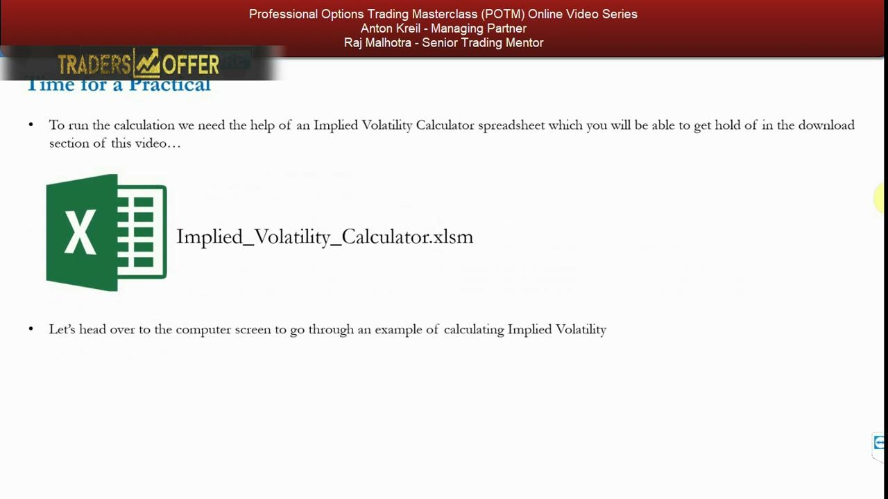
Three calculators, one idea
- The workbook has three tabs: Implied Vol — Black-Scholes, Implied Vol — Binomial (Yield), and Implied Vol — Binomial (Discrete).
- Which one you use depends on the option's exercise style (American vs European) and whether the underlying pays dividends.
- Layout is consistent: red inputs top-left, orange cells you type into, yellow market/model price cells, blue notes as a user guide, and web-resource links at the bottom.
- Before inputs are entered the sheet shows errors (#DIV/0!) — that is expected.
All three tabs do the same job: reverse-engineer the volatility the market is assuming, given that every other input is known. That is literally where 'implied' volatility gets its name — it is implied from the observed price.
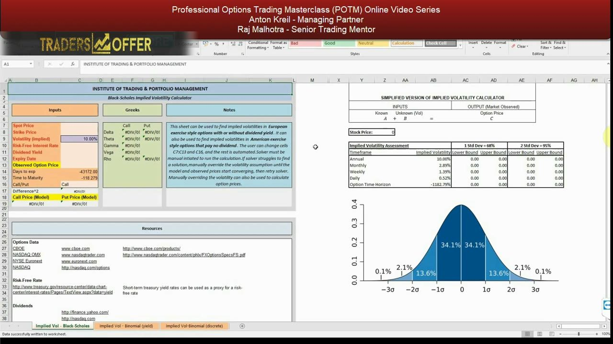
Why you need Solver: iterate, don't rearrange
- A pricing model has known inputs plus one unknown (volatility) equating to an output (the observed option price).
- These models can't be algebraically rearranged to solve for volatility.
- So you iteratively change the volatility assumption until the calculator's model price matches the market price — at which point that vol is the implied vol.
The RIGHT panel shows the simplified logic: Known inputs + Unknown vol = Observed option price. The whole exercise is finding the one vol value that makes the model output equal what the market is quoting.
Picking the tab: exercise style + dividends
- Step 1 — find the listing exchange and exercise style: on Cboe.com the ETP specifications say SPY options are American-style.
- Step 2 — check dividends on Dividend.com by ticker: SPY shows a dividend yield of 1.95% with no upcoming discrete payout.
- American + dividend YIELD (no discrete dividend) → use the middle tab, Binomial (Yield).
- If discrete dividends were upcoming (Dividend.com would show the amount and ex-date, as with Foot Locker), you'd use the Binomial (Discrete) tab instead.
The tab choice is mechanical once you know two facts about the option. SPY is American and pays a yield but no known discrete dividend, so the Binomial (Yield) calculator is correct here.
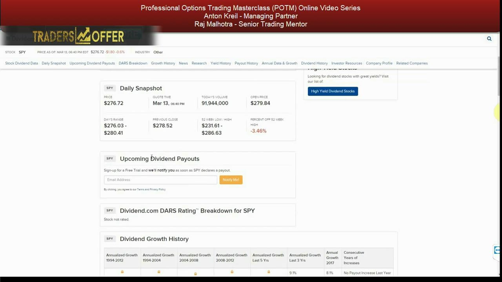
Sourcing the free inputs
- Spot price and dividend yield come straight off Dividend.com: SPY 276.72, dividend yield 1.95%.
- The risk-free rate is a short-term US Treasury from the Treasury yield-curve page — the video takes the 1-month at 1.64% as the closest thing to risk-free.
- Match the Treasury maturity to the horizon; the shortest term carries the least theoretical risk.
There is no truly risk-free instrument, so a short-term Treasury is the accepted proxy. Every input here is public and free — no paid data feed required.
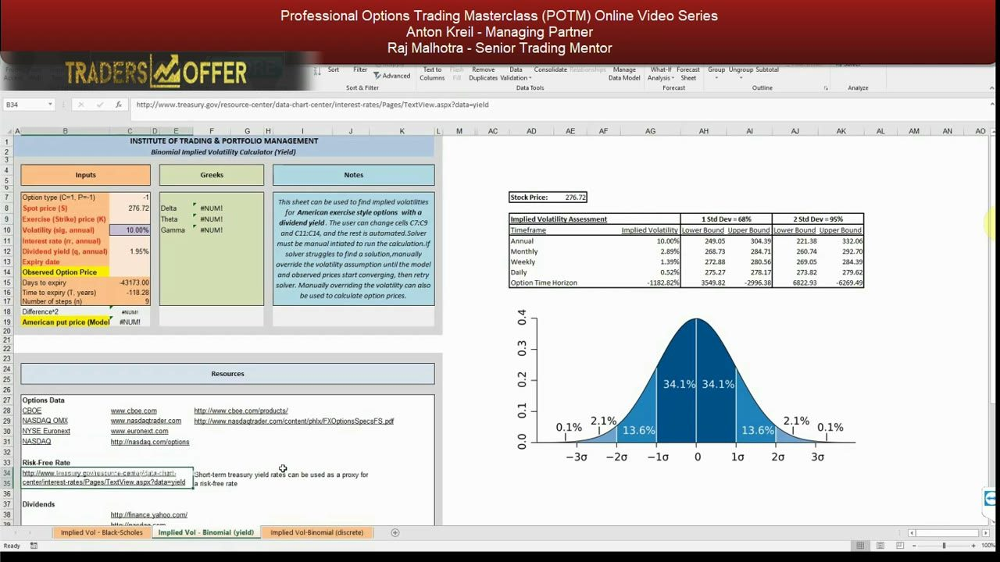
The observed price: Cboe chain → mid
- On Cboe set Options Range to 'All' and pick the July 18 (07/20/2018) expiry to match a 3–4 month sell-off outlook.
- The hedge is a ~5% out-of-the-money put: strike 265 (the number before the '-E' in the option code) against a ~276–277 spot.
- The SPY Jul-2018 265 put quotes Bid 5.91 / Ask 5.98 → mid ≈ 5.95, which becomes the observed option price.
- Enter -1 for a put (1 for a call) on the binomial tab; expiry 20 Jul 2018; strike 265.
The scenario (from Video 11): a long-only book up ~15% over 7 months, hedged with OTM SPY puts. The mid between bid and ask is the price you feed the calculator as the market observation.
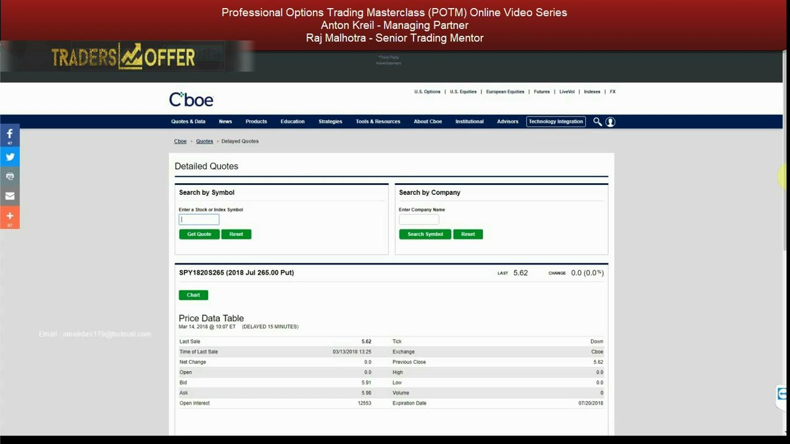
Running Solver
- Solver lives on the Data tab; enable it via File → Options → Add-ins → Manage Excel Add-ins → check Solver Add-in.
- Objective cell C18 = Difference² between observed and model price; Solver is set to MINIMISE it.
- It does that by changing only C10 (volatility); the difference goes to zero when the model price moves to match the fixed observed price.
- Before solving, model price 2.34 vs observed 5.95 gives Difference² ≈ 13; after Solve it converges.
Solver is the engine that performs the iteration for you. Set the objective, tell it to minimise by changing the vol cell, and click Solve — the model price walks to the observed price.
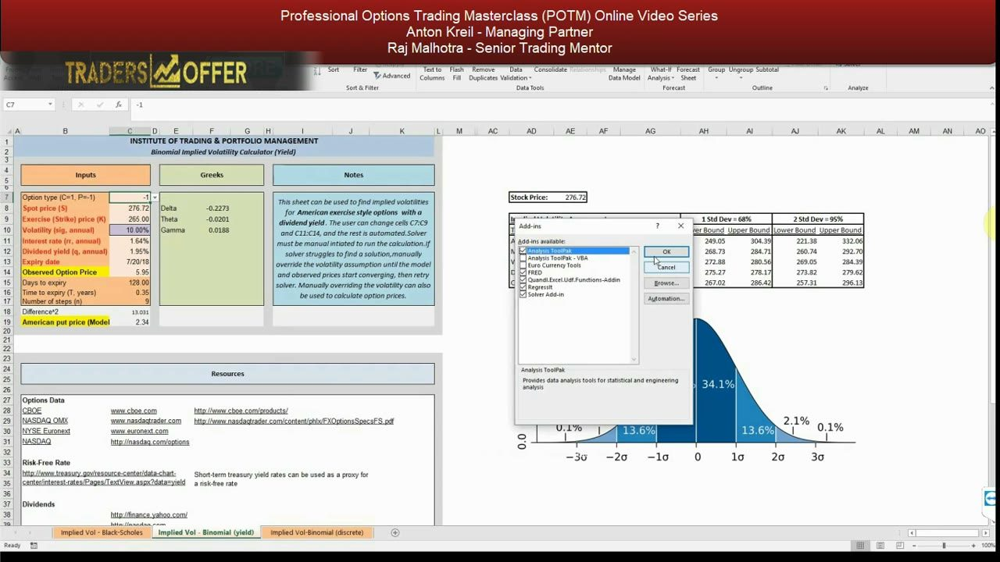
SPY solved: IV 16.86% and the VIX head-check
- Solver converges: C10 volatility = 16.86%, Difference² = 0.000, model American put price = 5.95 = observed.
- Greeks fall out: Delta -0.3143, Theta -0.0411, Gamma 0.0136.
- Head-check: the VIX (30-day forward IV on the S&P) is ≈16.69% — very close to 16.86%, validating the number.
- They differ slightly because the VIX blends many strikes and expiries over a 30-day window, while this is a single 265 put.
For an S&P-linked underlying the VIX is a free reasonableness check on your IV. A near-match means your calculation is sound; a large gap would flag an input or method error.
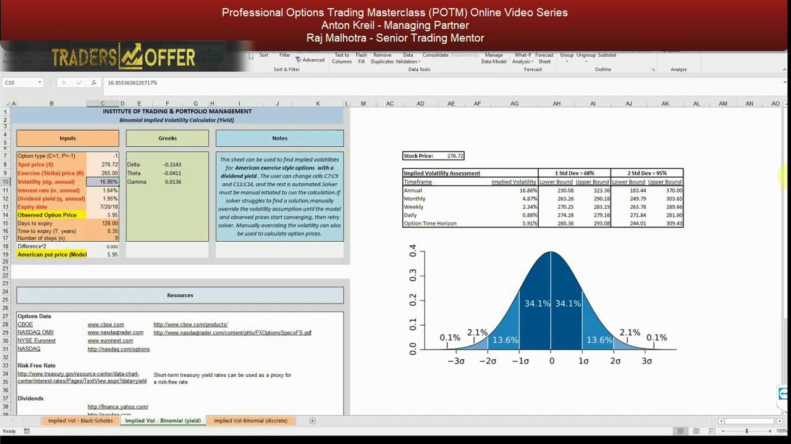
From annual IV to price ranges
- The 'Implied Volatility Assessment' panel translates annual IV into daily, weekly and monthly equivalents and the option-horizon figure.
- Scale by √time: monthly = annual/√12, weekly = annual/√52, daily = annual/√365 calendar days.
- ±1σ ≈ 68% of outcomes; ±2σ ≈ 95% (leaving ≈2.5% beyond each tail); ±3σ ≈ 99.8% (the bell curve reads 34.1/34.1/13.6/13.6/2.1/2.1/0.1/0.1).
- SPY ranges (spot 276.72): Annual → ±1σ 230.08/323.36, ±2σ 183.44/370.00; Monthly 4.87% → 263.26/290.18; Weekly 2.34% → 270.25/283.19; Daily 0.88% → 274.28/279.16; Horizon 5.91% → 260.36/293.08.
- Caveat: returns aren't perfectly normal (vol smile), so probabilities are approximate.
This is the payoff of the whole exercise — turning one annualized number into concrete price bands with probabilities attached, both for the option's exact horizon and for reference intervals inside it.
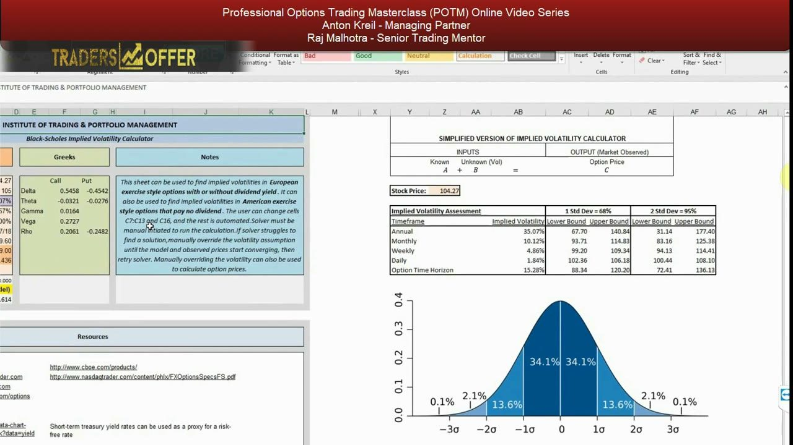
XPO case study: check the broker's price
- XPO Logistics — a transport/logistics firm riding e-commerce via Amazon last-mile delivery; assume a bullish, fundamentally-driven view. On 11 Mar 2018 the stock is at 104.27.
- Before trading, check the broker prices volatility fairly: the platform quotes the Aug 105 call IV at 34.97%.
- Since it's a US-listed single-stock option (American, no dividend), find the identical option on Cboe and run the Black-Scholes tab.
You are checking the exact same US-listed option, so numbers shouldn't materially differ. Skipping this means blindly trusting the platform against calculation errors, software bugs, or even malicious intent.
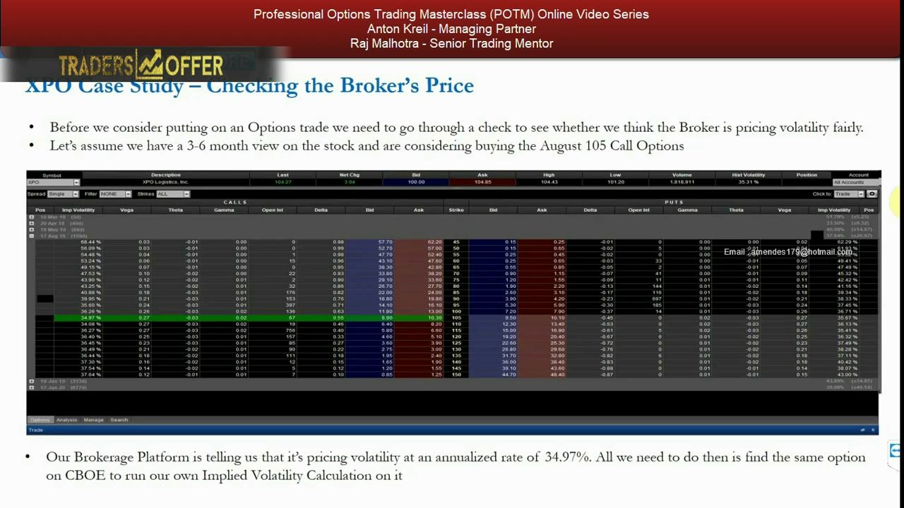
XPO IV: 35.07% vs broker 34.97%
- Inputs: spot 104.27, strike 105, rf 1.57%, div 0.00%, expiry 8/17/18, observed mid 9.60 → IV 35.07%.
- That is almost identical to the broker's 34.97%, so the option is priced correctly — and they're likely using the mid too.
- Greeks: Delta 0.5458, Theta -0.0321, Gamma 0.0164, Vega 0.2727, Rho 0.2061.
- If your IV differed materially: recheck your inputs first, then call the broker to confirm their IV and the price they used.
A ~0.1% gap is the fair-pricing green light. Whether the level of IV is worth paying comes next — that depends on your catalyst research and historical analysis, not the calculator.
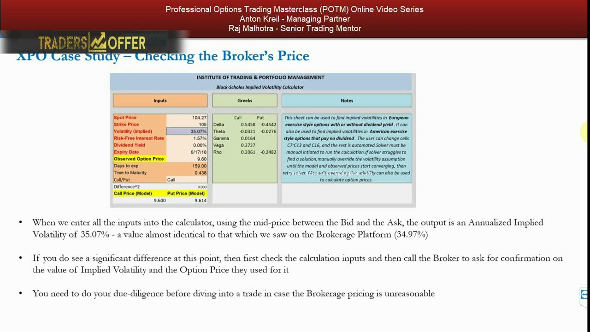
XPO ranges and the probability read
- XPO ranges (spot 104.27): Annual 35.07% → ±1σ 67.70/140.84, ±2σ 31.14/177.40; Monthly 10.12% → 93.71/114.83; Weekly 4.86% → 99.20/109.34; Daily 1.84% → 102.36/106.18; Horizon 15.28% → 88.34/120.20.
- Over the option horizon the market prices a 68% chance of finishing between 88.34 and 120.20 — a 32% chance outside.
- Bullish and long calls, you only care about the upside: halve the 32% → ~16% chance of finishing above 120.20.
- That ~16% is the number to beat: if your catalysts and historical work say the odds are higher, you have an edge and an implicit long-volatility position.
For a one-directional view you split the symmetric outside-band probability in half. The decision reduces to whether YOUR estimate of the upside probability exceeds the market's implied ~16%.
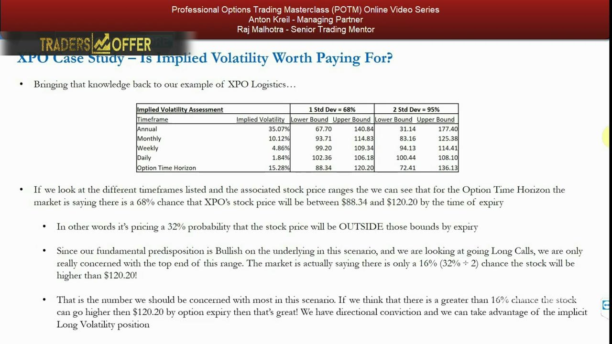
Reward/risk: bull call spread beats the outright
- Risking ~9.60/share on the long call, a 3:1 target is 105 + 4×9.60 = 143.40 — beyond +2σ, so the market implies <2.5%.
- If your realistic target is only ~135, cap the volatility exposure with a bull call spread: long 105 call @ 9.60, short 135 call @ 2.18 → net debit 7.42.
- Spread: max downside 7.42×100×5 = 3,710; max upside (135−105−7.42)×100×5 = 11,290 → R/R 3.04.
- Outright long 105 call to a 135 target: downside 9.60×100×5 = 4,800; upside (135−105−9.60)×100×5 = 10,200 → R/R 2.125.
- Run the IV calculator on BOTH legs — their IVs and probability bands should be similar (in/out-of-the-money legs sit slightly above ATM due to the vol smile).
When the target sits below what a high IV demands, structure beats direction: the 105/135 bull call spread turns a 2.125 outright into a 3.04 reward/risk. Implied volatility is the lens for finding the optimal structure — always aiming at the best reward/risk ratio.
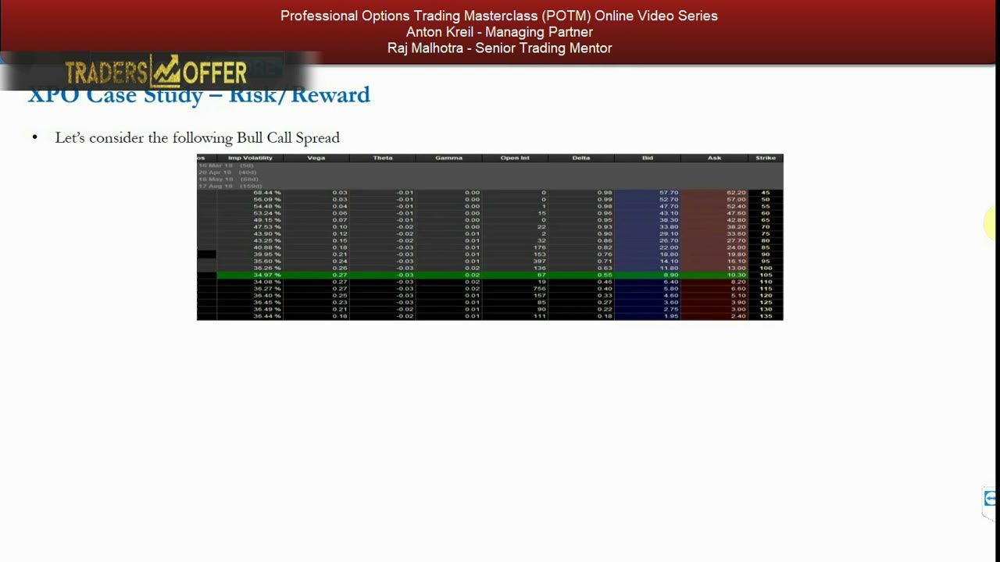
Glossary
- Implied volatility (IV)The forward-looking annualized standard deviation backed out of an observed option price, given all other pricing inputs are known.
- Realized volatilityBackward-looking volatility computed from historical prices; used alongside IV to judge whether IV is cheap or rich versus the past.
- Excel SolverAn Excel add-in that iteratively changes a chosen cell (here the vol cell C10) to minimise an objective (Difference², cell C18) until the model price equals the observed price.
- Binomial (Yield) tabThe calculator tab for American-style options on an underlying paying a continuous dividend yield (used for SPY).
- Black-Scholes tabThe calculator tab for European options, or American options paying no dividend (used for XPO).
- Observed option price (mid)The market price fed to the calculator, taken as the midpoint of the Cboe bid and ask.
- Risk-free rate proxyA short-term US Treasury yield (maturity-matched) used in place of a truly risk-free instrument.
- VIX head-checkComparing S&P/SPY IV to the VIX (30-day forward S&P IV) as a free reasonableness test; SPY 16.86% vs VIX ≈16.69%.
- Standard-deviation bands±1σ ≈ 68%, ±2σ ≈ 95%, ±3σ ≈ 99.8% of outcomes; the ~2.5% beyond each 2σ tail flags very unlikely targets.
- √time scalingConverting annual IV to shorter horizons: monthly = annual/√12, weekly = annual/√52, daily = annual/√365 calendar days.
- One-directional halvingFor a purely bullish (or bearish) view, halve the symmetric outside-band probability to get the chance of finishing beyond just one bound.
- Bull call spreadLong a lower-strike call and short a higher-strike call at the same expiry, reducing net cost and volatility exposure at the price of a capped upside — 105/135 gave R/R 3.04 vs 2.125 outright.
- Vol smileThe empirical fact that in- and out-of-the-money options carry higher IV than at-the-money ones because real returns aren't perfectly normal, making the probability ranges approximate.